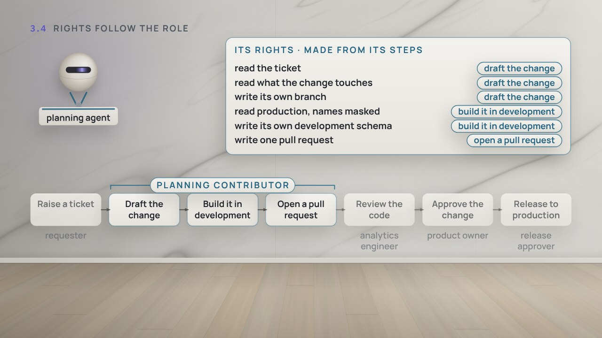
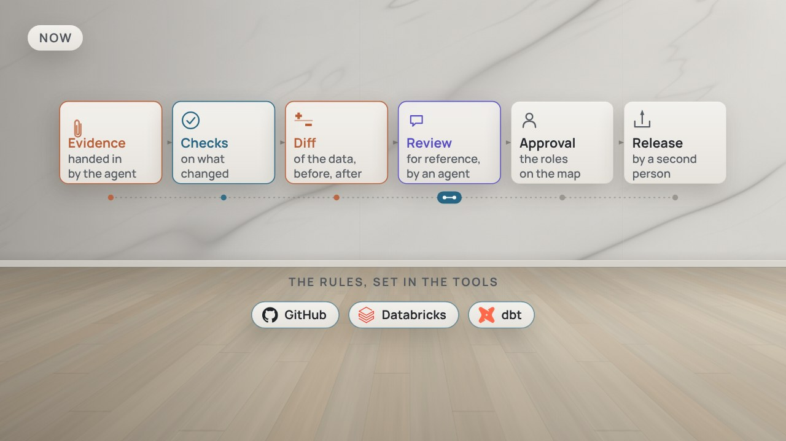

← Previous · Film 4 of 7
Rights follow the role
Planning's agent gets its rights from the three steps of its role, not from Jun's 46. What it doesn't do is another role's step.
Topics › AI agents in data work › From helper to colleague
In October, the auditors asked which of this year's 214 changes to Planning's tables an agent had drafted. Every one said Jun, and for nine he couldn't be sure. Now the planning agent has its own name in every tool, rights written from the map and checked each night, and a switch that stops only it.
Draft · The author hasn't reviewed it yet, so some details may change.
Pause and think is on: the film stops for one question at the end of chapters.
Download the videoCaption filesRead the script
Where next?
Every card in the film shows a real file from the example dbt project. Open the ones each chapter shows, on GitHub, or run the whole project yourself. How it was built, step by step, is told in In the weeds of data crafting.
agents/tools.yml agents/planning-agent/federation-policy.json profiles.ymlscripts/generate/agents.py agents/planning-agent/ agents/nightly-check.ymlagents/planning-agent/grants.sql profiles.ymlanalyses/governance/an_agents_work.sqlagents/README.md AGENTS.mdThe four Pause and think questions, for a class or a team. Open one to see the answer.
Film 5 of 7.

← Previous · Film 4 of 7
Planning's agent gets its rights from the three steps of its role, not from Jun's 46. What it doesn't do is another role's step.

Next · Film 6 of 7 →
The planning agent proposes more classes for 161 units. Jun reviews the code, and a second person approves and releases it.